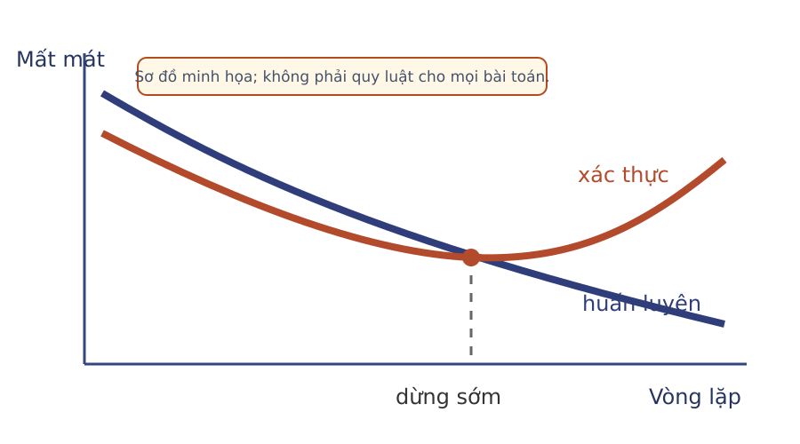
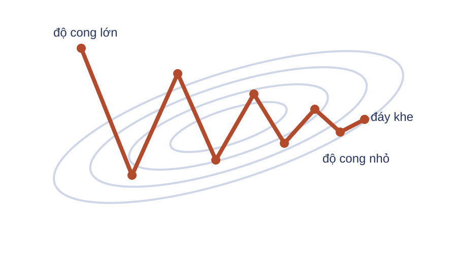
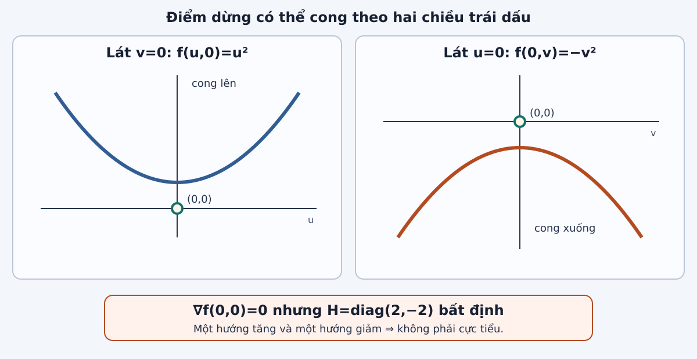
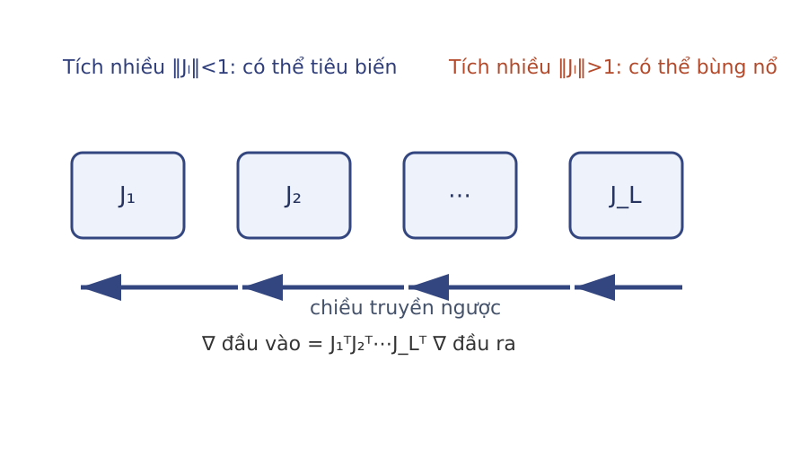
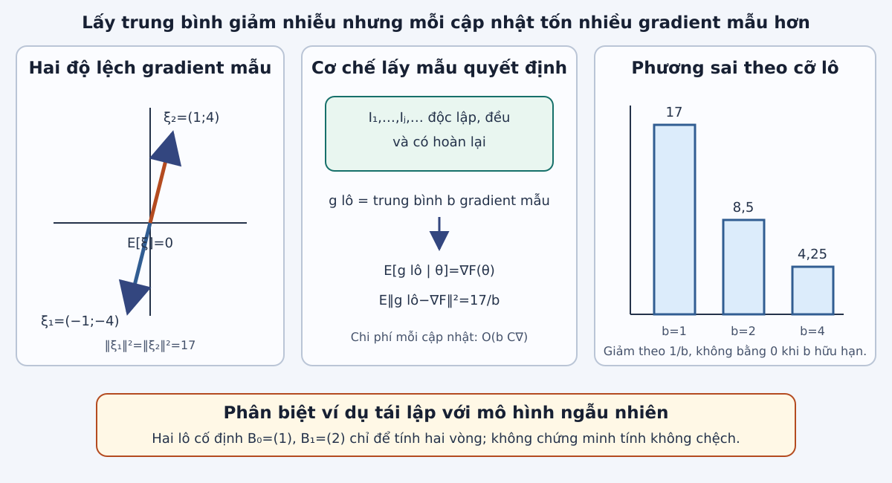
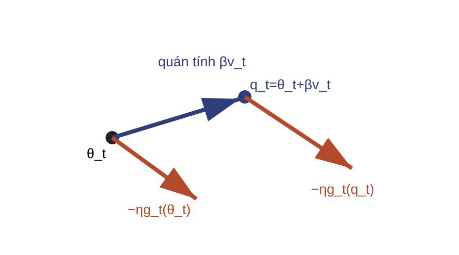
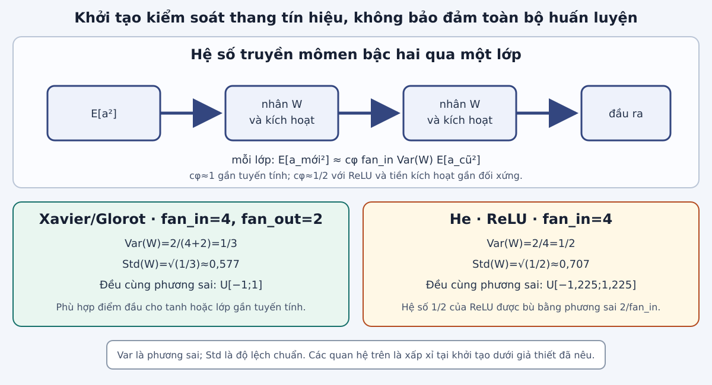

Cơ sở toán học cho AI · Học kỳ 1, 2026–2027
Trường Đại học Công nghệ · Đại học Quốc gia Hà Nội
Phân biệt mục tiêu tối ưu với mục tiêu khái quát hóa; chẩn đoán điều kiện hóa, điểm dừng và gradient qua sâu.
Tính hai vòng gradient ngẫu nhiên (SGD), momentum, Nesterov; chọn và tính thang khởi tạo Xavier hoặc He.
Tối ưu đại lượng nào?
Phá đối xứng và giữ thang ra sao?
Lô nào, chi phí và nhiễu bao nhiêu?
SGD hay quán tính?
Tín hiệu nào phản ánh dữ liệu chưa thấy?
Giảm đúng hàm đã cho là mục tiêu cuối.
Giảm hàm huấn luyện để cải thiện trên dữ liệu chưa thấy.
Với nhãn $y\in\{-1,1\}$, điểm số $s$ và biên $m=ys$:
Đo lỗi phân loại nhưng không cho gradient hữu ích.
Khả vi và phạt theo biên.

$P$ chưa biết nên $R$ không tính chính xác từ dữ liệu hữu hạn.
$\widehat R_n$ tính được trên tập huấn luyện.
Chi phí thấp, nhiễu lớn.
Trung bình trên $b_t$ mẫu.
Chính xác, chi phí theo $n$.

Một tốc độ học phải thỏa hiệp giữa:
Số điều kiện phổ khi $H\succ0$:

Tại $(0,0)$:
| $x$ | Kiểm tra | Phân loại |
|---|---|---|
| $-1$ | $f''(-1)=3$, $f(-1)=-5/12$ | cực tiểu cục bộ kém |
| $0$ | $f''(0)=-2$, $f(0)=0$ | cực đại cục bộ |
| $2$ | $f''(2)=6$, $f(2)=-8/3$ | cực tiểu toàn cục |

Với $h_\ell\in\mathbb R^{d_\ell}$, đặt $J_\ell=\partial h_\ell/\partial h_{\ell-1}\in\mathbb R^{d_\ell\times d_{\ell-1}}$.
Cùng $\theta$, hai lô có thể cho hai gradient khác nhau.
Gradient chỉ mô tả độ dốc tại điểm đang xét.
| Điểm cần xét | Dữ kiện | Phân loại |
|---|---|---|
| $(0,0)$ của $u^2-v^2$ | $\nabla f=0$, $\nabla^2f=\operatorname{diag}(2,-2)$ | điểm yên ngựa |
| $x=-1$ của hàm bậc bốn | $f''(-1)=3$, $f(-1)=-5/12\gt f(2)$ | cực tiểu cục bộ kém |
| $x=0$ của hàm bậc bốn | $f'(0)=0$, $f''(0)=-2$ | cực đại cục bộ; không phải cực tiểu |
Dùng $n$ gradient mẫu.
Dùng $b_t\ll n$ gradient mẫu.
Đặt $F(\theta)=\widehat R_n(\theta)$ và $C_{\nabla}$ là chi phí tính một gradient mẫu:
$F=\tfrac12(\ell_1+\ell_2)=\tfrac12\theta_1^2+2\theta_2^2+\tfrac52$.
$\nabla F=\tfrac12(\nabla\ell_1+\nabla\ell_2)$.
$\theta_0=(2,1)$, $\eta=0{,}1$.
Mỗi lô có một chỉ số: $b_t=1$, $B_0=(1)$, $B_1=(2)$.

Lấy $I_{t,1},\ldots,I_{t,b_t}$ độc lập, đều trên $\{1,\ldots,n\}$ và có hoàn lại; $B_t=(I_{t,1},\ldots,I_{t,b_t})$ là một đa tập.
Với $F(\theta)=\tfrac12\theta_1^2+2\theta_2^2+\tfrac52$:
| Vết lô cố định | Gradient | Kết quả |
|---|---|---|
| $B_0=(1)$ | $g_0(\theta_0)=(1,0)$ | $\theta_1=(1{,}9,1)$ |
| $B_1=(2)$ | $g_1(\theta_1)=(2{,}9,8)$ | $\theta_2=(1{,}61,0{,}2)$ |
Mô hình độc lập, có hoàn lại; $g_B$ là gradient trung bình trên lô $B$ cỡ $b$:
Gradient đổi dấu, nên cần triệt dao động.
Gradient giữ hướng, nên cần tích lũy.
Trong ví dụ này, đặt $v_0=0$, $\eta=0{,}1$, $\beta=0{,}5$ và dùng duy nhất quy tắc:
| Vòng | Gradient | Vận tốc mới | Kết quả |
|---|---|---|---|
| $t=0$ | $(1,0)$ | $v_1=(-0{,}1,0)$ | $\theta_1=(1{,}9,1)$ |
| $t=1$ | $(2{,}9,8)$ | $v_2=(-0{,}34,-0{,}8)$ | $\theta_2=(1{,}56,0{,}2)$ |
Các thành phần vận tốc triệt nhau.
Các độ dời được tích lũy.

Momentum: tính gradient tại $\theta_t$.
Nesterov: tính gradient tại $q_t$.
| Quy tắc | $\theta_2$ | Điểm tính gradient vòng hai |
|---|---|---|
| SGD | $(1{,}61,0{,}2)$ | $(1{,}9,1)$ |
| Momentum | $(1{,}56,0{,}2)$ | $(1{,}9,1)$ |
| Nesterov | $(1{,}565,0{,}2)$ | $q_1=(1{,}85,1)$ |
$s_j$ là trạng thái của bộ tối ưu cho đơn vị $j$.
Cùng lô và cùng quy tắc xác định cho gradient cùng trạng thái tương ứng bằng nhau.
Kết luận: hai đơn vị tiếp tục học cùng một đặc trưng.

$fan_{in}$ là số đầu vào, $fan_{out}$ là số đơn vị đầu ra; $a\in\mathbb R^{fan_{in}}$, $W\in\mathbb R^{fan_{out}\times fan_{in}}$, $z=Wa\in\mathbb R^{fan_{out}}$.
Tại khởi tạo, hàng $W_{j,:}$ độc lập với véc-tơ $a$; các trọng số trong hàng độc lập, cùng phương sai và có trung bình $0$. Các $a_k$ cùng mômen bậc hai:
Nếu $W_{jk}\sim\mathcal N(0,\sigma^2)$ thì:
Nếu $W_{jk}\sim\mathcal U[-r,r]$ thì:
Gần tuyến tính: truyền thuận gợi $\operatorname{Var}(W)\approx1/fan_{in}=1/4$; truyền ngược gợi $\operatorname{Var}(W)\approx1/fan_{out}=1/2$.
$fan_{in}=4$; với tiền kích hoạt gần đối xứng, $\mathbb E[\operatorname{ReLU}(z)^2]\approx\tfrac12\mathbb E[z^2]$.
| Bối cảnh | Khởi tạo đầu tiên | Mục tiêu xấp xỉ |
|---|---|---|
| tanh/gần tuyến tính | Xavier/Glorot | cân bằng thuận và ngược |
| ReLU | He | bù mômen qua chỉnh lưu |
| trọng số ẩn giống nhau | không dùng | phải phá đối xứng |
| Quyết định | Câu hỏi | Công cụ |
|---|---|---|
| Mục tiêu | đại lượng nào được tối ưu? | $\widehat R_n$ và mất mát thay thế |
| Điểm đầu | hàm kích hoạt và hai fan? | phá đối xứng; Xavier/He |
| Chẩn đoán | khó do hình học, độ sâu hay nhiễu? | Hessian, gradient theo lớp/lô |
| Cập nhật | chi phí và dao động nào? | SGD, momentum, Nesterov |
| Đánh giá và dừng | khi nào dừng? | $\widehat R_{\mathrm{val}}$; tiêu chuẩn dừng |